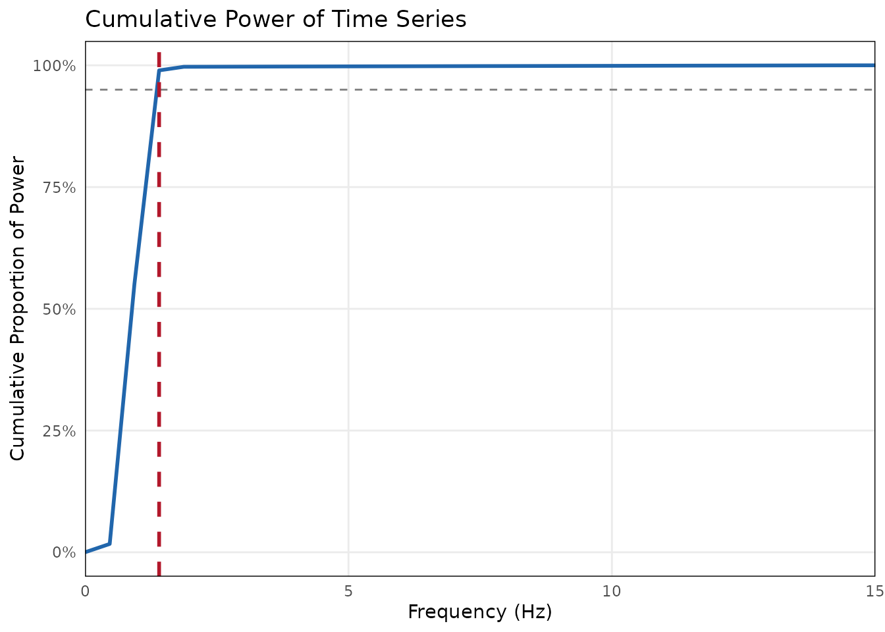
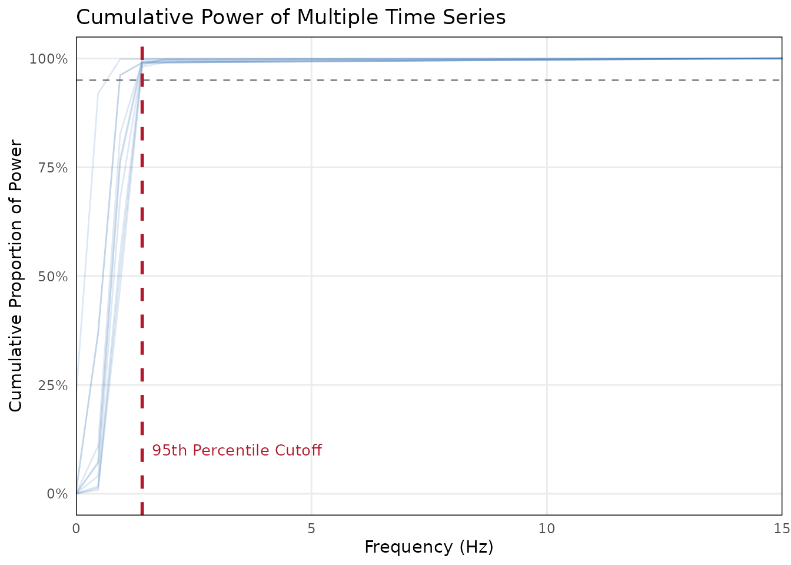

vignettes/determine-downsampling.Rmd
determine-downsampling.RmdWhen analyzing continuous behavioral data like facial expressions or kinematics, raw data is often recorded at high frequencies (e.g., 30Hz or 60Hz). Analyzing dyadic synchrony at these high frequencies is computationally expensive and highly susceptible to tracking noise and statistical autocorrelation.
The bsync package provides tools to help you empirically
determine a biologically plausible downsampling rate using Welch’s Power
Spectral Density (PSD).
Simulating Behavioral Data
For this tutorial, we will simulate 30Hz continuous smile intensity data (e.g., AU12 from OpenFace). Genuine facial expressions typically evolve slowly (between 0.3 Hz and 1.5 Hz). We will add a small amount of high-frequency white noise to simulate micro-jitter from the automated tracking software.
Because real-world interactions vary in length, we will store our simulated participants in a list rather than a data frame.
set.seed(42)
fs <- 30 # 30 frames per second
# Generate a list of 10 simulated participant signals
smile_data <- lapply(1:10, function(i) {
# Randomize interaction length between 45 and 60 seconds
t_end <- runif(1, 45, 60)
t <- seq(0, t_end, by = 1/fs)
base_freq <- runif(1, 0.3, 1.2) # Genuine slow expression
noise_level <- runif(1, 0.02, 0.08) # Small tracking jitter
# Signal (slow wave) + Noise (rapid jitter)
sin(2 * pi * base_freq * t) + rnorm(length(t), mean = 0, sd = noise_level)
})
names(smile_data) <- paste0("Participant_", 1:10)Evaluating a Single Time Series
If you are only working with one or two individuals, you can pass a
single numeric vector to evaluate_signal_power(). The
function calculates the threshold below which 95% of the signal’s true
variance is captured.
# Evaluate just the first participant
single_eval <- evaluate_signal_power(
x = smile_data$Participant_1,
sample_rate = fs,
threshold = 0.95
)
#>
#> ── Signal Power Evaluation ─────────────────────────────────────────────────────
#> 95% of signal power is captured below 1.41 Hz.
#> ✔ To prevent aliasing, the minimum universal sampling rate is 2.81 Hz.
# View the diagnostic plot
single_eval$plot
The function outputs a conservative target sampling rate to prevent aliasing.
Best Practice: Dataset-Level Evaluation
In a real study, you should not calculate different downsampling rates for different participants. Doing so would make your subsequent Windowed Cross-Correlation (WCC) parameters represent different amounts of real time across dyads.
Best practice is to calculate the cutoff frequency for all
participants and choose a single, universal rate.
evaluate_signal_power() natively accepts lists and data
frames, making this process completely automated.
# Pass the entire list of 10 participants
multi_eval <- evaluate_signal_power(
x = smile_data,
sample_rate = fs,
threshold = 0.95
)
#>
#> ── Dataset-Level Signal Power Evaluation ───────────────────────────────────────
#> Evaluated 10 signals.
#> 95th percentile of cutoffs is 1.41 Hz.
#> ✔ To prevent aliasing, the minimum universal sampling rate is 2.81 Hz.
# View the dataset-level diagnostic plot
multi_eval$plot
When provided with multiple signals, the function calculates the cutoff for each individual and then conservatively recommends the 95th percentile of those cutoffs. This ensures you capture the meaningful behavioral data even for the participants with the fastest expressions.
Applying the Downsampling
If our Nyquist minimum is around 2.5 Hz, we need to choose a target rate slightly higher than that which divides cleanly into our original 30Hz sample rate.
Valid options would be:
- 3 Hz (Downsample factor of 10)
- 5 Hz (Downsample factor of 6)
We can now safely proceed to downsample our entire dataset using
bsync::aggregate_by_time() or
bsync::downsample_signal() before running our synchrony
analyses.